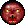

ScoreDoom Add-on Pack Extra Artifacts and Pickups
These powerups are located randomly around the map along with extra regular Doom powerups.
The effects of different artifacts can add up, as players may use multiple artifacts at the same time, provided (typically), they are of different types.
| Artifact | Icon | Description |
|---|
| Speed | | Gives the player a boost of speed which lasts roughly 2 minutes. Beware that the player can then outrun their own missiles! |
| |
| Dark Servant | | Use the 'N' key to use this artifact. A large Maulator Demon is summoned to fight alongside the player. The Maulator will also score points for the player who summoned it. The Maulator lasts for roughly 1 minute. Each player may carry a total of 3 of these artifacts. *TIP: Only summon when standing still, or when walking or running at full pace.* |
| |
| Half Damage | | Reduces the damage players take to 1/2 that of normal. Lasts roughly 1 minute. |
| |
| Quarter Damage |  | Reduces the damage players take to 1/4 that of normal. Lasts roughly 1 minute. |
| |
| Reflection | | All damage taken by the possessor from an enemy is reflected back at the enemy X4!! |
| |
| Quad Damage | | Player inflicts 4x their usual damage. Lasts approximately 1 minute. |
| |
| Regenerate | | Player will heal 5 hit points of damage every few seconds until the effect wears off after roughly 1 minute. |
| |
| Vampirism | | Player will heal 1/2 of the damage they deal out, until the effect wears off after roughly 1 minute. |
| |
| Terrorsphere | | Player will frighten or 'turn' monsters so that they run away and attack less. Effect lasts approximately 30 seconds. |
| |
| Time Freezer | | Literally stops time, except for the player (and other team members in co-op). Effect lasts for only a few seconds. |
| |
| Double Damage | | Player inflicts 2x their usual damage. Lasts approximately 1 minute. |
| |
| Rage |  |
Doubles the rate of fire for a player's weapon, including melee. |
| |
| Spread | | At no additional ammo cost the player fires three shots instead of one; one straight and the other two at 45 degree angles. Works with melee too. |
| |
| Ammo Regen | | Gives the player unlimited ammo for 20 seconds. |
| |
| High Jump | | Temporarily gives the player a high-jump ability to reach areas of the map they may not be able to reach otherwise, to get equipment, secrets and keys etc...
It may also be used to evade monster attacks. |
| |
| Former UAC Scientist | | You'll see these guys making a run for it, taking top secret UAC documents back to the forces of hell. Take them out and recapture that UAC data! |
| |
| UAC Data | | Capture this data to get +250 bonus points. Dropped by former UAC scientists. |
| |
| UAC Secret Data | | Capture this data to get +500 bonus points. Dropped by former UAC scientists. |
| |
| UAC Top Secret Data | | Capture this data to get +1000 bonus points. Dropped by former UAC scientists. |
| |
| UAC Sentry Turret | | Use the 'M' key to use to deploy a turret at a location and it will attack all demons and zombies until it is destroyed, scoring additional points for the player who deployed it. Each player may carry a total of 3 of these. *TIP: Only deploy when standing still, or when walking or running at full pace.* |
| |
| UAC Smart Bomb | | A top secret weapon deployed by special forces teams to help eradicate the demon hordes. Powered by cold fusion, it creates multiple very high frequency super-sonic shockwaves directed around the player which can destroy almost all living and metallic entities within a close range, up to 1000 hit points, as long as they are in sight. Large structures and some demons are impervious to its effects. It also has a receiver which can detect fellow marine transmitters, which allows the weapon to spare them. Each player may carry a total of 3 of these. Hit Key '8' to bring the weapon up. |
| |
| Big Backpack | | Gives the player 100 bullets, 25 shells, 25 rockets and 150 plasma cells. You may also find a UAC Sentry Turret or UAC Smart Bomb inside. |
| |
| Daisy the Points Bunny | | If you go rabbit hunting, Daisy has 650 hit points, but players who hit it, will score quadruple damage, and therefore quadruple points (up to 650). Daisy also drops a Points Artifact. Total potential bonus points are 1215. |
| Points Artifact | | Capture this artifact to get +500 bonus points. Dropped by Daisy the Points Bunny. |
| Maulator Demon | | Summoned when using the Dark Servant artifact, this demon ally is a ferocious, fast moving death machine which can 'level the playing field' and score the summoner a lot of points. It sticks around for about a minute or so. |
| | | |
Custom Content Credits:
(Disclaimer: For some monsters I've made minor alterations, like changing the health. For others I also made some other changes to help incorporate them into the mod. Also, I tried my best to give credit to the people who submitted the monsters directly. Please check out Realm667.com's Beastiary for more comprehensive credits. Much of the work was based on content provided by id software and others.)
Arachnophyte --Xaser, Quasar
ChainsawZombie --Bouncy, Graf Zahl
PlasmaZombie --Bouncy, Tormentor667
RapidFireTrooper --NMN, Tormentor667, Graf Zahl
RocketGuy --The Innocent Crew
StealthFighter --Obtic
ZombieMarine --Bouncy, Ixnatiful
ZombieRailgunner --Tormentor667
ZombieTank --Enjay
ChaingunMajor --Vader
SSGZombie --Skulltag
SuicideBomber --Tormentor667
ChaingunGuy2 --Eriance
NamiDarkImp --Nanami
STDarkImp --Vader, Nanami, Carnevil
VoidDarkImp --Vader, Cyb
Devil --Eriance
Shadow --Vader
SlimeImp --Dutch Devil
SnakeImp --Cyb
StoneImp --Espi
SuperImp --Optic, Graf Zahl
Imptrite --Neoworm
BloodDemonClone --Neoworm, Carnevil, Vader
Bloodfiend --Eriance
HotDog --Eriance
MaulerDemon --Eriance, Kristus, KDiZD Team
NightmareDemon --AgentSpork
PlasmaDemon --Dutch Devil, Tormentor667
Satyr --Vader, Nanami
PoisonSoul --Neoworm
Terror --Tormentor667
CacolanternClone --Lexus Alyus, Carnevil
CacoLich1 --Vader
EnhancedCacodemon --Tormentor667
HellGuard --Espi
HellWarrior --Vader, Tormentor667
Afrit --Nanami
ArchonOfHell --Eriance
BelphegorClone --Nanami, Carnevil
BruiserDemon --Vader
HellsFury --Tormentor667, Vader
LordofHeresy --Vader, Tormentor667, Bouncy
WarlordOfHell --Tormentor667
RailArachnotron --Tormentor667
PlasmaElemental --The Ultimate Doomer, The Dark Archon
TorturedSoul --Xaser, Assmaster
Inferno --Eriance
Deathknight --Eriance
Incarnate --Eriance
Hectebus --AgentSpork, Carnevil
Diabloist --Eriance
CyberMastermind --Nanami
Demolisher --Eriance
Annihilator --Eriance
Soul Harvester --Vader, Tormentor667
Bat Familiar -- Espi, Nanami
Catharsi --Tormentor667, RottKing
Imp Warlord --Espi, Nanami
Ghoul --Eriance
Fallen --Eriance
Sabre Blade --Phobos
Warlord of Hell --Tormentor667
Netherworld Drone --Chilvence, Tormentor667
Netherworld Queen --Chilvence, Tormentor667
Avatar --Eriance
Scourge --Captain Toeneil
Flame Wyvern --Chopkinsca
StoneDemon --Jimmy91
Infernux Grand --Mechadon
Maxibus --Captain Toeneil
SpatterTron --JL_Harkster
Balor --Ghastly Dragon
Ethereal Soul --Neoworm
HellRose --NeoWorm
Thamuz --DBThanatos, Jimmy91
FZombieSoldier --DBThanatos (& others?)
LasercannonZombie --DBThanatos (& others?)
Hellsmith & Hellsmith Apprentice --Eriance (& others?)
Amachotron --Jimmy91
Malevonant --DBThanatos,Jimmy91
FUziGuy --DBThanatos (& others?)
FCommander --DBThanatos (& others?)
Azanigin --DBThanatos (& others?)
ChaingunnerTank --Jimmy91
ApprenticeofDsparil --Bouncy, Tormentor667
InfernalSpider, Crackodemon -- IcyTux
Nailborg --Neoworm, Mechadon
FusionSpider --Tormentor667, InsanityBringer
Vulgar --Eriance
Dune Warrior --Tormentor667, Neoworm
Watcher --Eriance
Hellstorm Archon --Eriance
DBTPawn (CyberSpectre Demon) --DBThanatos & Neoworm
Helemental --Eriance
ZSec Zombie --CaptainToenail & Ghastly Dragon
Arachno-Baron (aka ArachnotronofHell), Armored Imp --Dark_Knight
Obsidian Statue --Ghastly Dragon
Agathodemon --Jimmy91
Spirit Imp -- Ghastly Dragon & Tormentor667
Core Tentacle -- Eriance
Thor -- Starscream
Illus -- Ghastly Dragon
Nightmare Cacodemon -- Bouncy, Graf Zahl
PsychicSoul -- Maelstrom
TornadoDemon --- Maelstrom
DarknessRift ---Ghastly Dragon
CyberBaron -- Ben2k9/Virtue
FoxImp -- (Daniel)??
FlyingImp -- Maelstrom
Rictus -- Captain Toenail
PyroDemon -- Maelstrom
Bormereth -- DBThanatos
Phantom -- Maelstrom
Lesser Mutant -- Starscream
Azazel -- DBThanatos
SpeedDemon -- StarScream
FleshWizard -- Melvinflynt
Inquisitor, Crusader Bot, Reaper Bot -- Ben2k9
Terminator -- Vader
Defiler -- Dreadopp, Lord_Z
Desolator -- Dreadopp
Zsoldier -- Mortarion
SupremeFiend -- Raz
SlimeWorm -- Captain Toenail
PhaseImp -- Neo
HellfireSoul, SurrealDemon -- Surreal Doomer
UAC Sentry Bot Power Up & UAC Smart Bomb Weapon -- Mike "Inuyasha_989" Kasten
zombieflyer --Captain Toenail, Ghastly Dragon
wicked, hellion --Eriance
quasit --Demmon Break Master
Railbot -- Captain Toenail
Baphomet's Eyes -- TheDarkArchon
Horn Beast - Mr. Green & Rolls
Undead Priest- Captain Toenail
Inferno Demon - Maelstrom
Aracnorb - jimmy91
Black Widow --CaptainBighead
Chaingun Spider --Captain Toenail
Daedabus --Vegeta, Aerial
Cyber Imp --Kinsie
DreamCreeper -- Juan "JacKThERiPPeR
Golem --XutaWoo
Jetpack Zombie --Ghastly_dragon, Captain Toenail
Nightmare Beast --Jimmy91
Overlord --Eriance
Poe -- hnsolo77,Vader Eriance
Reaper Zombie, Unmaker Zombie, Rocket Marine Zombie --Xim
Roach -- Ghastly_dragon
D3ForgottenOne, Sonic Railgun Zombie,D3Cacodemon --Ghastly_dragon
Sawed Off Shotgun Zombie, Super Flyinh Imp --Xim
Segway Zombie --Captain Toenail
Trite, Repeater Zombie --Ghastly_dragon
Shadow Beast --Tormentor667
Agaures --Dreadopp
Tesla Coil, Blot --Captain Toenail
Cardinal -- zrrion the insect,Jimmy, Espi, Ebola
FreezerZombie --Xim, TheDarkArchon
Hangman --Captain Toenail
Moloch --ProjectAngel,Eriance, LilWhiteMouse
NailBorg Commando--Mechadon, Xim
ProfaneOne --ProjectAngel
PyroImp --Dreadopp
Demon Dog (Rottweiler) --Captain Toenail
SniperRifleGuy --Xim
Squire -- Woolie Wool,Vader, Jekyll Grim Payne
ZombiePlasmaTank -- Xim,Enjay
Swarm --LilWhiteMouse
SuperDemon --Xim
Paladin, Loaper, Nukage Beast --Captain Toenail
Scourge (Boss), Chiller -- ProjectAngel
Vampire, Frozen Imp --Maelstrom
NetherSyst -- Unholypimpin
Netherworld Dark Imp -- Jaeden
Grief Elemental -- Supersonix07
Evil Doomguy, Super Baron, Super HellKnight --Erkki-X
Super Cyberdemon --Cherepoc
Aldhivas --Shinu-Hazad
Insanity Spider, Insanity Arachnophyte -- Xaser
Hammer Hound, Hells Battery --Lil' White Mouse
Nightshade --Tormentor667
Shield Sphere --Captain Toenail
Grenade Launcher Decorate --Ghastly_dragon
Nuke Launcher Decorate --Xim
armored baron - phobus
Baphomet -- Xaser
cerebus, tchernobog - dbthantos
spreadfirezombie,obliterator,gargantus,deathelemental,
darkvile,technocaco,spreadfiresoldier,machinegunner,
burningsoul,drownedsoul,hellchampion,icebaron,chargedemon,
decepticon,sunhegor - Dac948 (?)
bone dragon - Bouncy
demontrickster - maelstrom
vileking - Icytux
lord of hell -Ben2k9
Cyberbot -- UnTrustable
IceBoss -- kuchikitaichou, Alterz
Suicide Soul -- UnTrustable
10mm zombie (zombiehenchman) --CthulhuCultist
veste - ben2k9
female rail, plasma, sergeant & soldier zombies - DavidRaven
void imp, skulltag imp, imp abomination - ItsNatureToDie
bfgcommando, KarasawaGuy - scalliano
uacbot - virtue
cheogh - Callum Sanderson
heretic imp variant - virtue
headman - Captain Toenail
lavademon - virtue
rotwraih - Captain Toenail
Maephisto - virtue
Giant Bat, PlasmaBeam Zombie, xenodemon, hornet - Captain Toenail
Quad-Shotgun Zombie, Machinegun ZSpecOps - Ghastly_dragon
undead hunter - Icytux
solardemon, vetis, DeathBringer - ChronoSeth
Revenant Spirit, chesire, dark archvile, SmokeMonster - zrrion the insect
Bloodlich - ichor
archspawner - DarkDemon
hierophant - Eriance
shade - Jaeden
chaoswyvern - ETTiNGRiNDER